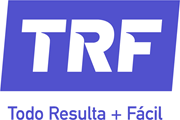
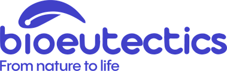

Casos de sucesso

Caso de sucesso · TRF
“Outras gerências perceberam que estamos um pouco mais alinhados, mais organizados, sem saber que estamos nesta metodologia.”
— Mariano Newton, Gerente de OperaçõesNas palavras deles
Sebastián GolisanoGerente de Distribuição
“A metodologia me permitiu baixar de 60% para 30% o meu tempo em questões operacionais e me dedicar às coisas que realmente me interessam, que eu gosto e onde agrego valor à empresa.”
“Identificamos uma oportunidade no negócio de e-commerce, que é o que mais cresce. Então decidimos criar o cargo de gerente de e-commerce na empresa, com um papel bem definido.”
“Consegui tirar férias convencido de que minha equipe ia poder responder por mim.”
“Eu recomendaria a qualquer executivo de alto nível para ter sua equipe alinhada. Que as decisões de estrutura estejam sempre sobre a mesa e não sejam a última decisão a ser tomada.”
Mariano NewtonGerente de Operações
“Era sempre por sensação. A metodologia da Pausa nos ajudou a visualizar esse problema com dados, e pudemos tomar uma decisão muito mais rica e pura, baseada em dados visíveis e contundentes.”
“Já não são discussões de sentimentos; agora existe uma espécie de linguagem: estou fazendo isso que não me cabe, estou dedicando muitas horas a isso.”
“Me impulsionou a chegar às reuniões muito mais preparado para dizer: esta reunião pode ser de 15 minutos.”
“No começo pode custar. É uma metodologia nova, uma linguagem nova, quase uma cultura nova, mas no fim das contas você a adota muito rápido.”
Agustín CanaldaGerente de Distribuição de E-commerce
“Não é o controle sobre as tarefas que cada pessoa está fazendo, mas sim aproveitar essa transparência dos dados para trabalhar juntos e otimizar o tempo da semana.”
“Havia jornadas de trabalho de dez, onze horas, e às vezes não tão produtivas.”
“Como um choque de realidade sobre as tarefas que a gente faz todos os dias.”
“A Pausa me ajudou a otimizar o tempo, fazer as coisas acontecerem em menos tempo, organizar melhor minha equipe e, por consequência, ser muito mais profissional.”
Laura VeraController · Distribuição
“Acho que o que a Pausa trouxe para a TRF foi um pouco de ordem.”
“Antes de usar a Pausa, meu planejamento era muito, muito arcaico.”
“Isso me ajudou a pôr os pés no chão: isto eu posso fazer agora, já avancei até aqui.”
“Defino meus próprios horários para fazer minhas coisas, e essa é uma mudança importante, que antes eu não fazia.”
Outros casos
Ver todos os casos
“Vi um salto na qualidade das conversas ao passar a falar com dados e sair do subjetivo.”
Nico Buxton · InaucoVer caso →

“Os dados ajudam a tomar decisões de estrutura, avaliar o desempenho e entender se os desafios que nos propomos estão bem colocados ou não.” Tomi Silicaro · BioeutecticsVer caso → “Graças à base da metodologia, é espetacular como estamos todos muito mais alinhados sobre para onde temos que ir.” Gonzalo Gutiérrez Taboada · MDO ConsultoresVer caso →